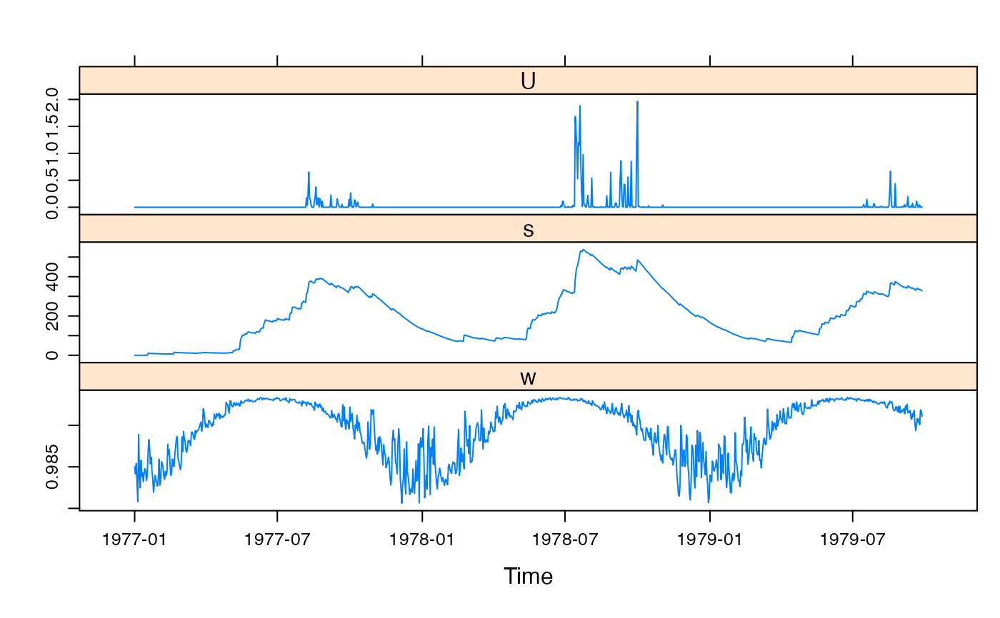

IHACRES.CWI.model.RdThe Catchment Wetness Index (CWI) effective rainfall model for IHACRES. This is the classic model of Jakeman and Hornberger (1993), with the extensions to ephemeral catchments of Ye et al. (1997).
cwi.sim(DATA, tw, f = 0, scale, l = 0, p = 1, t_ref = hydromad.getOption("cwi")$t_ref, s_0 = 0, return_state = FALSE)
| DATA | a
|
|---|---|
| tw | drying rate at reference temperature (\(\tau_\omega\)). This is a time constant, the number of time steps to reduce to a fraction \(1/e \approx 37\%\). See definition below. |
| f | temperature dependence of drying rate. See definition below.
The case of |
| scale | mass balance term (c in the literature).
If this parameter is set to |
| l | moisture threshold for producing flow (in units of s).
This can be used together with |
| p | power on soil moisture (above the threshold |
| t_ref | reference temperature in units of |
| s_0 | starting value for soil moisture index s. |
| return_state | to return state variables as well as the effective rainfall. |
The IHACRES model with an antecedent precipitation index was introduced by Jakeman et al. (1990), based on the Bedford-Ouse model of Whitehead et al. (1979). This slightly more physics-based version with a Catchment Wetness Index (CWI) was developed by Jakeman and Hornberger (1993). It is a metric-type model, where rainfall effectiveness is proportional to a simple antecedent moisture index, and the output is scaled to enforce mass balance.
The effective rainfall at each time step is proportional to rainfall, scaled by a soil moisture index s: $$U_t = c \cdot s_t \cdot P_t$$
Or, if the parameters l and p for ephemeral rivers
are used (after Ye et al., 1997):
$$U_t = (c (s_t - l))^p \cdot P_t$$
The soil moisture index s is calculated by a filter applied to the rainfall, where the drying rate is defined by a time constant \(\tau_{\omega,~t}\): $$s_t = (1 - 1 / \tau_{\omega,t}) s_{t-1} + P_t$$
If f = 0 then the drying time constant is equal to the value of tw.
Otherwise the drying rate varies over time according to the input data E:
$$\tau_{\omega,t} = \tau_\omega \exp(-0.062 f E_t)$$
Note that the drying rate and effective rainfall are bounded below by 0, a step omitted in the equations above.
cwi.sim returns the modelled time series of effective rainfall,
or if return_state = TRUE, a multi-variate time series with named
columns U (effective rainfall), s (index of soil
moisture, s) and w (the recession rate of s, i.e.
\((1 - 1 / \tau_{\omega,t})\).
Jakeman, A. J., and G. M. Hornberger (1993), How much complexity is warranted in a rainfall-runoff model?, Water Resources Research, 29: 2637-2649.
Jakeman, A.J., I.G. Littlewood, and P.G. Whitehead (1990), Computation of the instantaneous unit hydrograph and identifiable component flows with application to two small upland catchments, Journal of Hydrology, 117: 275-300.
Ye, W., B.C. Bates, N.R. Viney, M. Sivapalan and A.J. Jakeman (1997), Performance of conceptual rainfall-runoff models in low-yielding ephemeral catchments, Water Resources Research, 33: 153-16.
Felix Andrews felix@nfrac.org
hydromad(sma = "cwi") to work with models as objects (recommended).
#> List of 1 #> $ cwi:List of 6 #> ..$ tw : num [1:2] 0 100 #> ..$ f : num [1:2] 0 8 #> ..$ scale: num NA #> ..$ l : num 0 #> ..$ p : num 1 #> ..$ t_ref: num 20data(Canning) x <- cwi.sim(Canning[1:1000,], tw = 162, f = 2, l = 300, t_ref = 0, scale = 0.000284, return_state = TRUE) xyplot(x)#> #> Hydromad model with "cwi" SMA and "expuh" routing: #> Start = 2000-01-01, End = 2000-03-31 #> #> SMA Parameters: #> lower upper #> tw 0 100 #> f 0 8 #> scale NA NA #> l 0 0 (==) #> p 1 1 (==) #> t_ref 20 20 (==) #> Routing Parameters: #> NULL## simulate with some arbitrary parameter values mod1 <- update(mod0, tw = 32, f = 2, scale = 0.01, tau_s = 10) ## plot results with state variables testQ <- predict(mod1, return_state = TRUE) xyplot(cbind(HydroTestData[,1:2], cwi = testQ))## show effect of increase/decrease in each parameter parRanges <- list(tw = c(0, 100), f = c(0, 8)) parsims <- mapply(val = parRanges, nm = names(parRanges), FUN = function(val, nm) { lopar <- min(val) hipar <- max(val) names(lopar) <- names(hipar) <- nm fitted(runlist(decrease = update(mod1, newpars = lopar), increase = update(mod1, newpars = hipar))) }, SIMPLIFY = FALSE) xyplot.list(parsims, superpose = TRUE, layout = c(1,NA), main = "Simple parameter perturbation example") + latticeExtra::layer(panel.lines(fitted(mod1), col = "grey", lwd = 2))